4 The landscape of placental xQTL regulation
Modality-wise discovery landscape, following DevBrain Fig. 1. Two panels that manuscript draws from external datasets are adapted or omitted: eGene overlap and effect-size correlation against GTEx/PsychENCODE adult brain (1B/1C) have no external placenta xQTL resource — GTEx lacks placenta and the largest published placenta eQTL set (Peng 2017) is the RICHS cohort, already inside this atlas — and are omitted; discovery context is instead given against the published placenta eQTL literature (1A analog, below). Inversion QTLs (1J) are not assayed by this pipeline.
4.1 Phenotypes and genes tested per modality
| ancestry | modality | genes_tested |
|---|---|---|
| EAS | RNA_editing | 353 |
| EAS | alt_TSS | 7720 |
| EAS | alt_polyA | 7276 |
| EAS | combined | 12711 |
| EAS | expression | 12568 |
| EAS | intron_retention | 1808 |
| EAS | isoform_expression | 12343 |
| EAS | isoforms | 9060 |
| EAS | splicing | 5284 |
| EAS | stability | 4493 |
| EUR | RNA_editing | 885 |
| EUR | alt_TSS | 7889 |
| EUR | alt_polyA | 7359 |
| EUR | combined | 13209 |
| EUR | expression | 13150 |
| EUR | intron_retention | 2610 |
| EUR | isoform_expression | 13143 |
| EUR | isoforms | 9242 |
| EUR | splicing | 7618 |
| EUR | stability | 7376 |
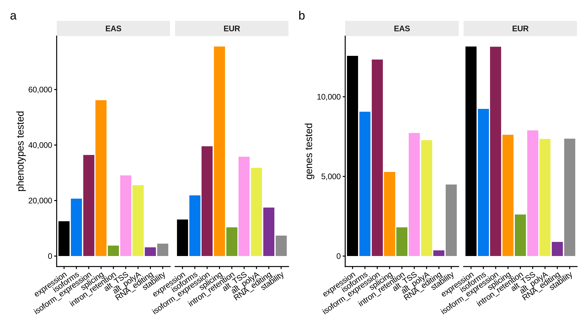
Note the ancestry asymmetry: EUR contributes roughly 1.5–5.6× more phenotypes than EAS in the ungrouped layer (ancestry-specific phenotype filtering; 1.5× for splicing up to 5.6× for RNA editing), while the gene universes are similar (~12–13k genes). Mapping sample sizes vary slightly by modality (EAS 271, EUR 131 across layers, inferred from allele-count/frequency denominators) because each modality’s phenotype matrix harmonizes to a slightly different sample set.
4.2 Discovery in the context of published placenta eQTL studies
DevBrain Fig. 1A analog: eGene discovery versus sample size. Published values are hardcoded from the papers (captions/abstracts); note that Peng 2017 (RICHS) and Choi 2024 (SNUH) cohorts contribute to this atlas, so their points mark the ancestry-stratified predecessors of the present analysis rather than independent references.
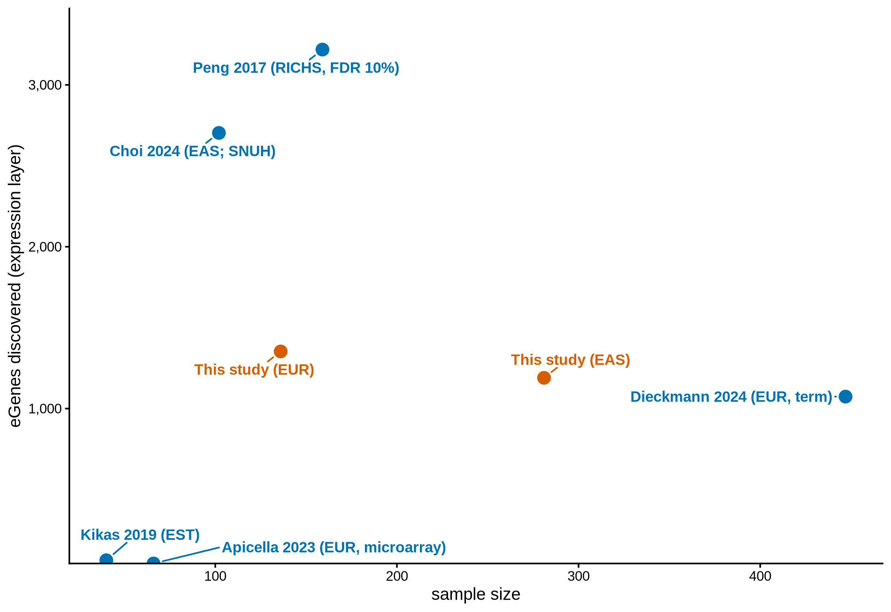
This study’s per-stratum expression-layer eGene counts (1,190 EAS at n = 281; 1,353 EUR at n = 136) sit on the literature discovery-versus-size trend; the atlas additionally contributes the eight non-expression modalities that none of the published studies assay.
4.3 xQTL associations per modality — q-value tiers
Discovery panel on the ungrouped (phenotype-level) layer — the fine-mapping input set — with expression contributed by its per-gene primary scan. DevBrain reports the analogous discovery counts per modality at FDR ≤ 5%.
At FDR ≤ 5% the phenotype-level discovery layer contains 28517 associations (6613 EAS, 21904 EUR) across 3289 / 6528 unique genes; the combined cross-modality layer adds 9158 gene-level eGenes. The figure shows the full q-value landscape: phenotypes binned by q-value per ancestry × modality. Splicing splits by ancestry: EUR splicing reaches the q ≤ 0.05 tier, while EAS splicing remains near-null — best q-value 3.6^{-24} — so the EAS splicing bar sits almost entirely in the q > 0.50 tier.
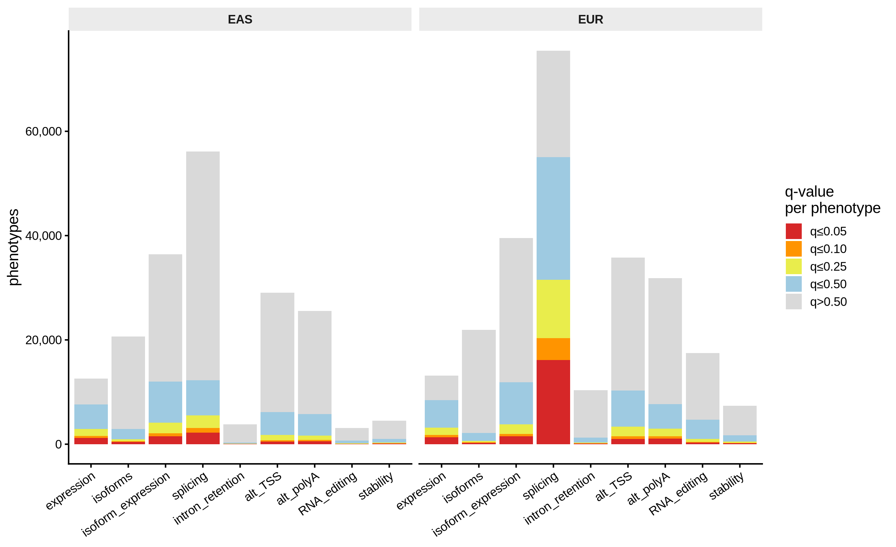
4.4 Conditionally independent signals per gene
DevBrain Fig. 1H analog: the distribution of conditionally independent
signals per tested unit, from the stepwise (cis.map_independent) scans —
now run on the grouped, ungrouped, and combined layers alike.
Stepwise regression (cis.map_independent) ran on 64,059 FDR-qualifying units across the three layers; 24,542 (38.3%) carry a conditionally independent secondary signal (rank ≥ 2).
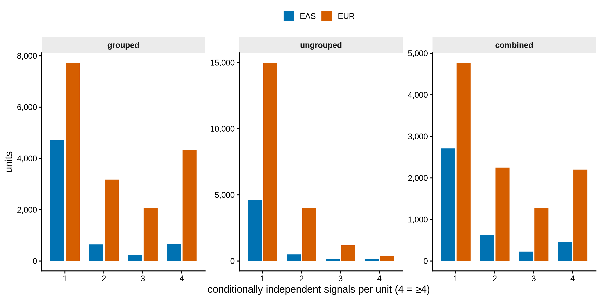
Units are gene groups in the grouped/combined layers and individual phenotypes in the ungrouped layer; only FDR ≤ 5% entrants undergo the stepwise scan. The design-level view below shows how many phenotypes each gene contributes to its group (the multiple-testing unit).
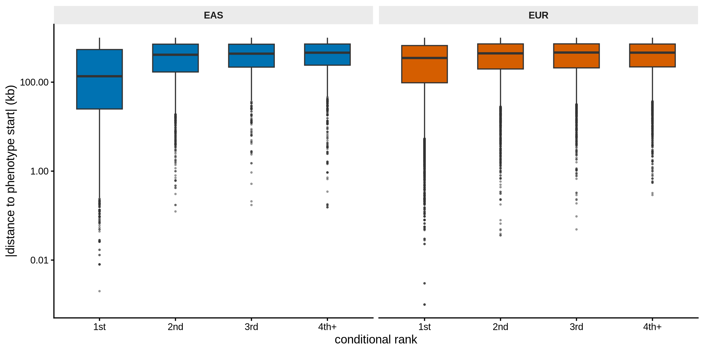
Primary (rank-1) signals are closer to the phenotype start than secondary signals (median 300.98 vs 451.99 kb; Wilcoxon p = 0) — the allelic-heterogeneity pattern DevBrain reports (their fig. S3M/N).
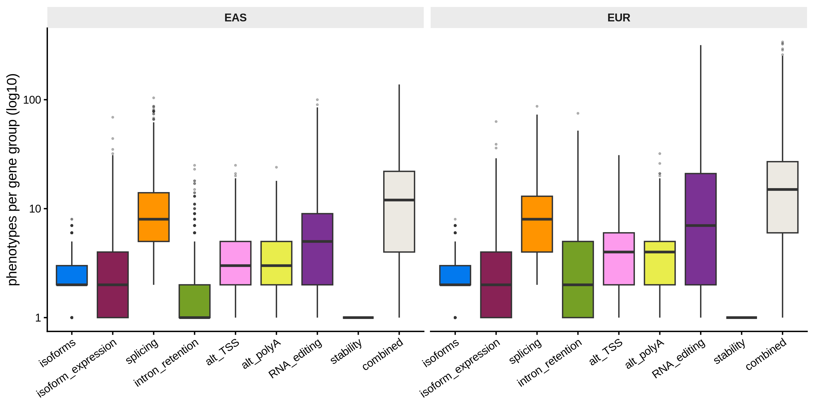
Combined groups integrate a median of ~4–5 phenotypes per gene (max > 100) — the cross-modality burden-sharing the PANTRY design exploits. (Stability shows a flat box at 1 by design: one phenotype per gene.)
4.5 Lead-variant distance from the TSS
DevBrain Fig. 1E analog: signed distance of each lead variant from its target’s start versus association strength, every tested gene shown — significant xQTLs cluster sharply at the TSS.
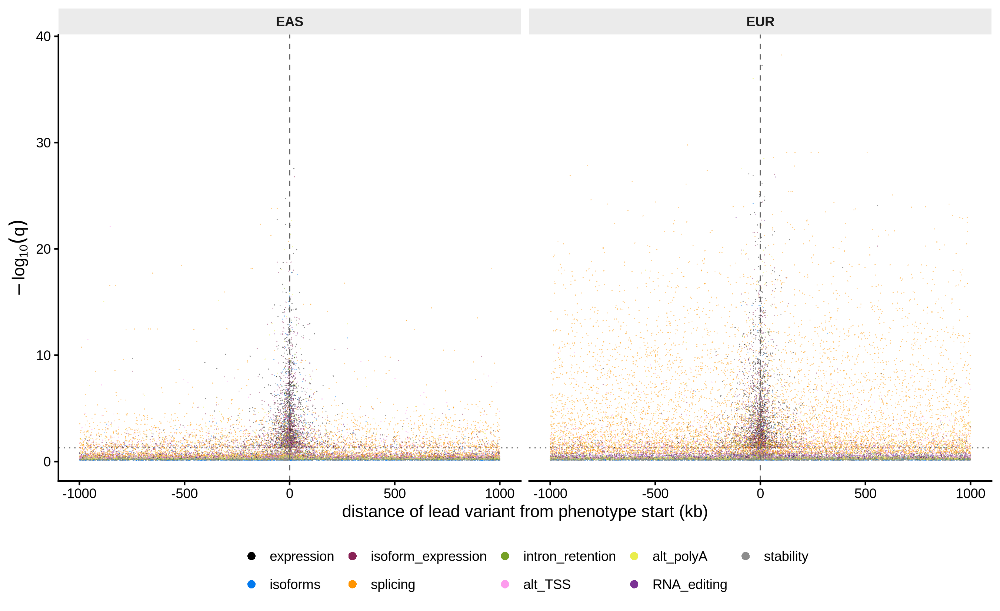
Every tested gene’s lead variant (grouped layers; non-significant bulk thinned to 1,500 points per modality for plotting). The vertical enrichment of points above the FDR ≤ 5% line near 0 kb is the expected TSS-proximal concentration of causal cis-regulatory variants.
4.6 Cross-modality overlap of xGenes
DevBrain Fig. 1D analog: overlap among the modality-specific gene-level catalogs (grouped layers, FDR ≤ 5%), per ancestry.
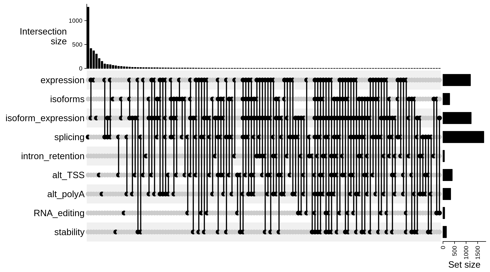
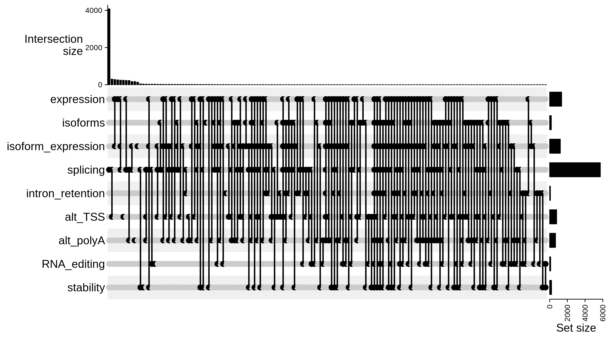
4.7 Functional annotation enrichment of lead variants
DevBrain Fig. 1F analog: enrichment of fastVEP consequence classes and regulatory-element overlaps (ENCODE cCRE classes, placenta OCRs) among FDR ≤ 5% lead variants versus all tested lead variants — Fisher exact log2 odds ratios per ancestry × modality. Rendered only when lead_variant_annotations.tsv.gz is present in the archive (extraction script 35, with the fastVEP two-pass).
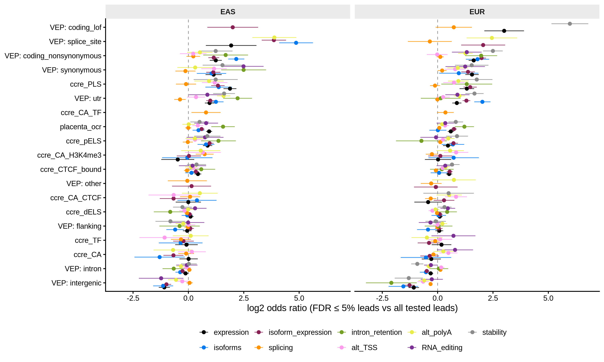
Positive log2OR = over-representation among significant leads; bars are Wald 95% CIs on the log odds ratio (cells with fewer than 3 annotated foreground variants, or fewer than 20 foreground variants per ancestry × modality cell, are omitted; p-values unadjusted). The expected cis-regulatory signature is enrichment of regulatory-region/cCRE/OCR classes and depletion of intergenic sequence.
4.8 Cross-modality sharing of xQTL effects
DevBrain Fig. 1H analog: Storey π1 replication rate of each modality’s FDR ≤ 5% lead (variant, gene) pairs against the nominal association of the same variant across the gene’s phenotypes in every other grouped modality, per ancestry. Rendered only when cross_modality_lookup.tsv.gz is present.
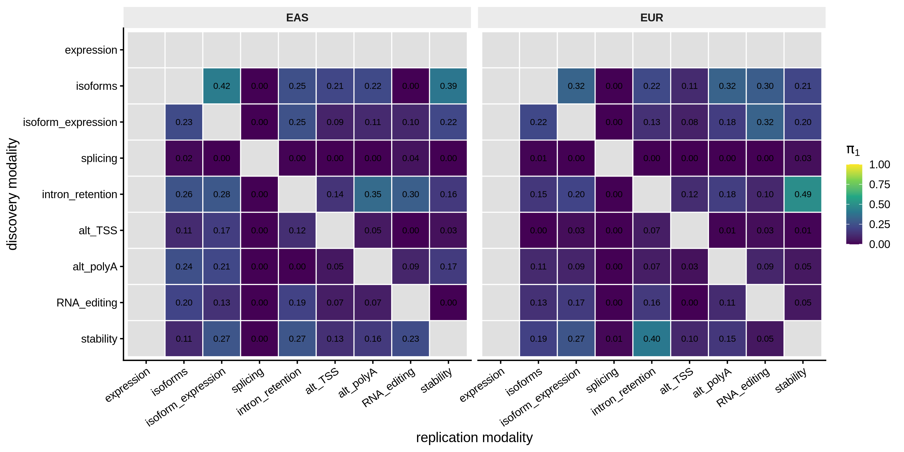
π1 = 1 − π0 (Storey, λ = 0.5) on replication-modality nominal p-values of each discovery modality’s FDR ≤ 5% leads; the diagonal (self-replication) is not computed and cells with fewer than 20 tested pairs are left blank. High off-diagonal π1 indicates that one modality’s regulatory variants recur as nominal associations in another — the cross-phenotype sharing the combined layer exploits.
4.9 Constraint of xGenes
DevBrain Fig. 1G analog: gnomAD v2.1.1 loss-of-function constraint (LOEUF) of combined-layer eGenes, split by driver modality, versus tested non-eGenes. Rendered only when gene_constraint.tsv is present.
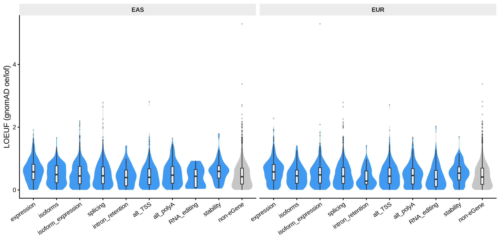
Lower LOEUF = stronger constraint. eGenes are less constrained than tested non-eGenes (median LOEUF 0.48 vs 0.42 in EAS, Wilcoxon p = 2e-09; 0.46 vs 0.41 in EUR, p = 1.6e-07) — the dosage-sensitivity enrichment DevBrain reports for brain eGenes.